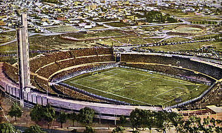
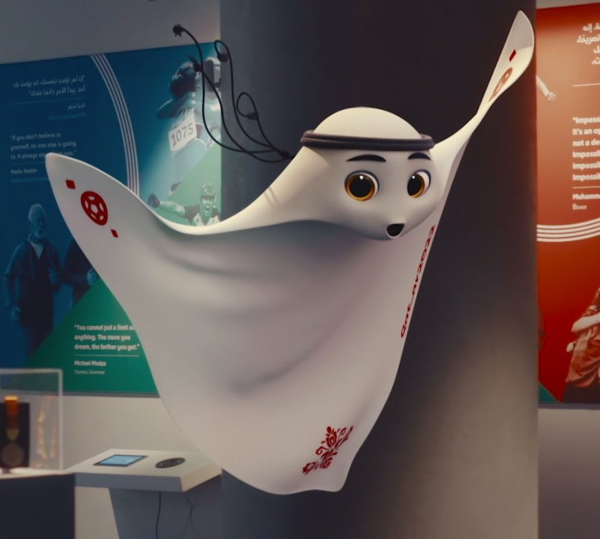
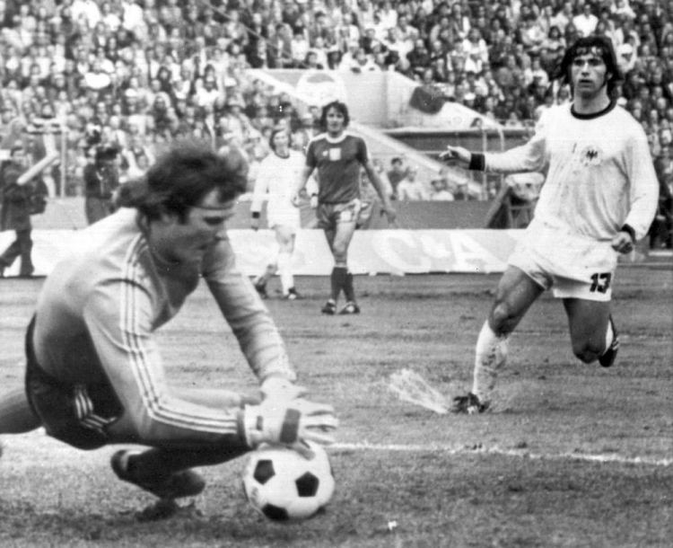
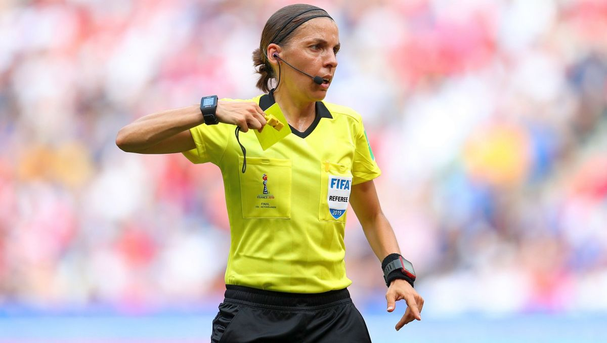
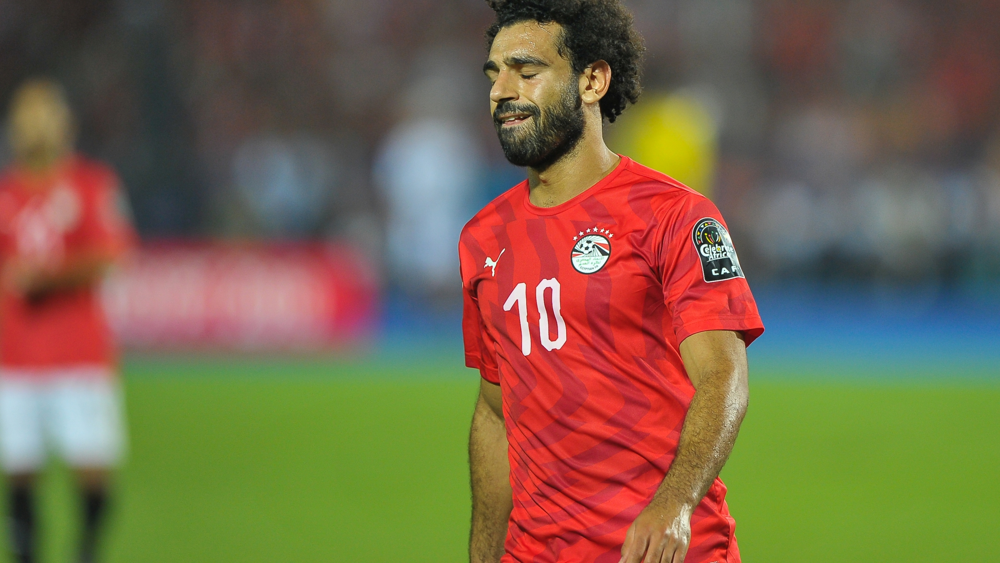
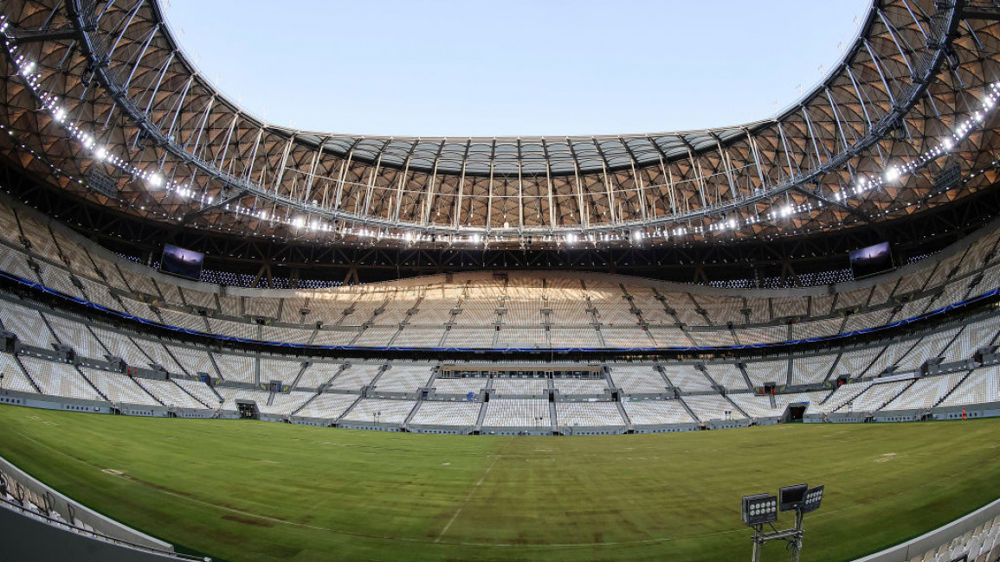
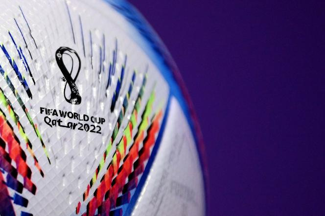
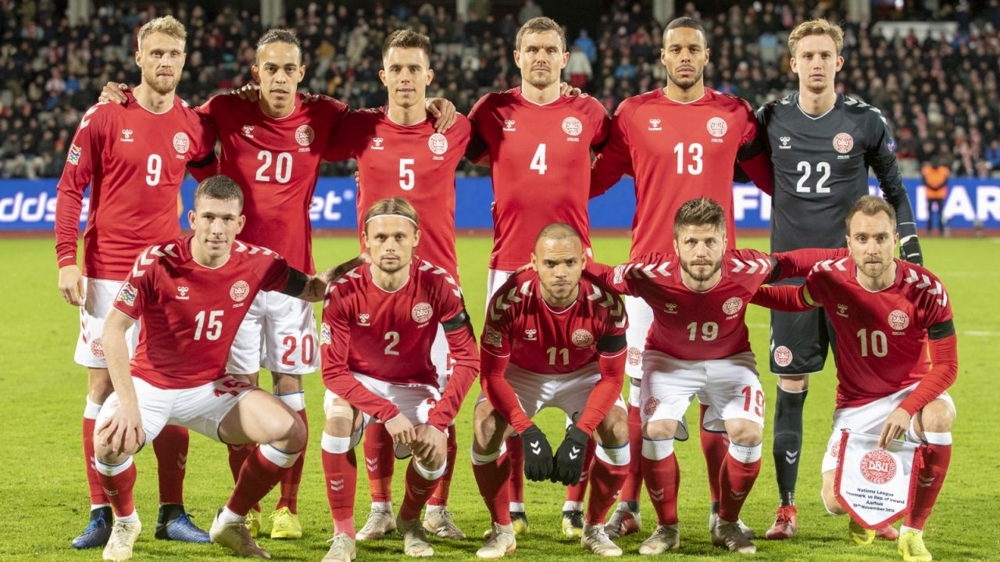
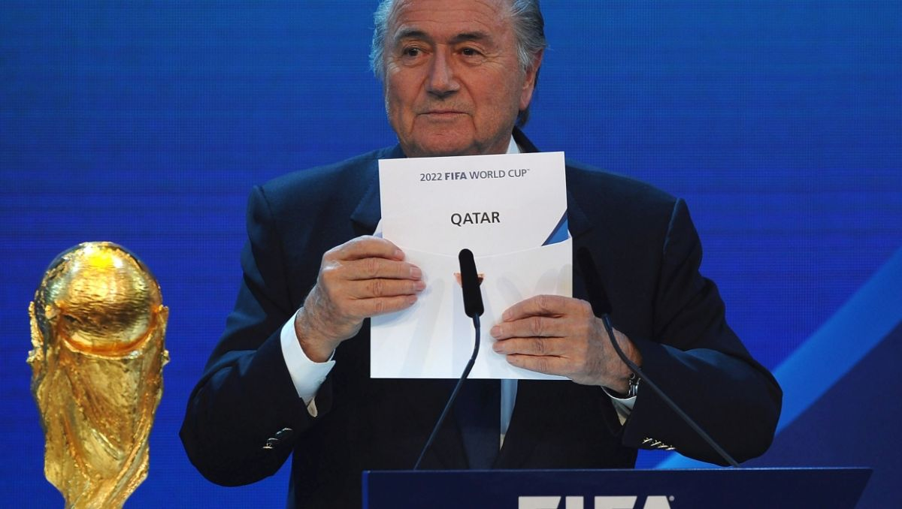
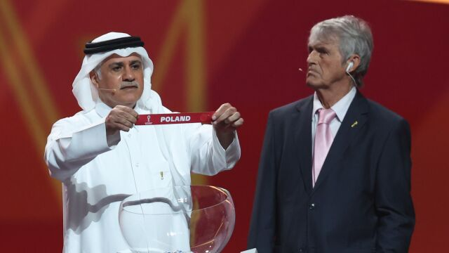

Rozpoczęcie mundialu:
Główna
Gospodarz
Historia
Reprezentacje
Grupy
Stadiony
Zwycięzcy
Quiz
1. Kto był zwycięzcę pierwszego mundialu
Brazylia
Urugwaj
Niemcy
Hiszpania

2. Jak nazywa się oficjalna maskotka Mundialu 2022
La'eeb
Labe
Li'bee
Laleb

3. Jakie jest największe osiągniecie Polski na Mistrzostwach Świata
1 miejsce
2 miejsce
3 miejsce
4 miejsce

4. Czy mundial w Katarze to pierwszy mundial na ktęrym w gronie sędziowskim znajduję się kobiety
Tak
Nie

5. Prawda/Fałsz wśród tegorocznych uczestników mundialu znajduje się reprezentacja Egiptu
Prawda
Fałsz

6. Na którym stadionie zostanie rozegrany final tegorocznych Mistrzostw Świata
Al Janoub Stadium
Al Thumama Stadium
Al Bayt Stadium
Lusail Stadium

7. Która firma zaprojektowała tegoroczną oficjalną pilkę mundialu
Puma
Nike
Adidas
New Balance

8. Która reprezentacja narodowa znajduje się na zdjęciu
Dania
Portugalia
Niemcy
Hiszpania

9. Które z tych państw nie kandydowało do roli organizatora tegorocznych Mitrzostw Świata
Austalia
Japonia
Chiny
Stany Zjednoczone

10. Prawda/Fałsz reprezentacja Polski była losowana z 2 koszyka
Prawda
Fałsz
